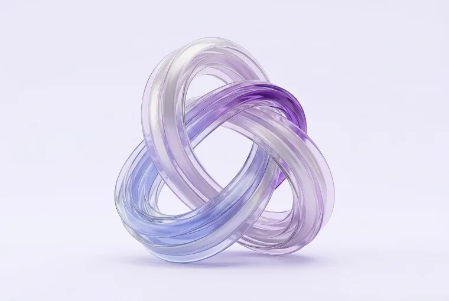

Tu asistente inteligente
¡Hola, Visitante!
¿En qué puedo ayudarte hoy?
Sugerencias para empezar
NexusAI está escribiendo…
NexusAI puede cometer errores. Verifica la información importante. No compartas datos sensibles.
Preguntas frecuentes
Encuentre una respuesta o pregúntenos en el chat.
Puede buscar sin tildes o con pequeños errores de escritura.
Panel administrativo
Preguntas y respuestas
Gestione la información que utiliza el asistente.
| ID | Categoría | Pregunta | Respuesta oficial | Estado | Acciones |
|---|
Panel administrativo
Registros locales
Consultas en esta bitácora local
0
Sesiones únicas registradas aquí
0
FAQs activas cargadas
0
| N.º | Sesión | Usuario | Consulta | Respuesta | Fecha y hora |
|---|